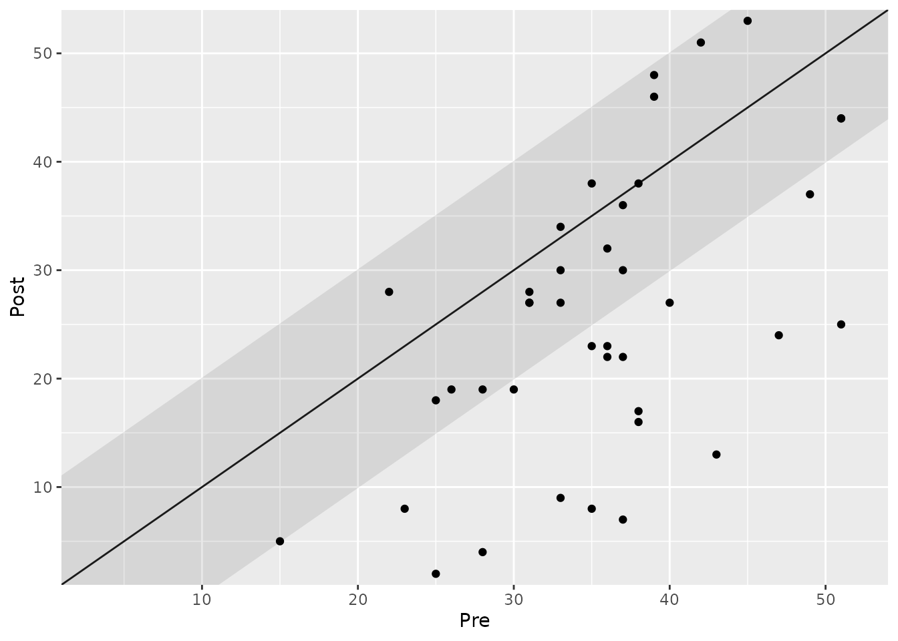
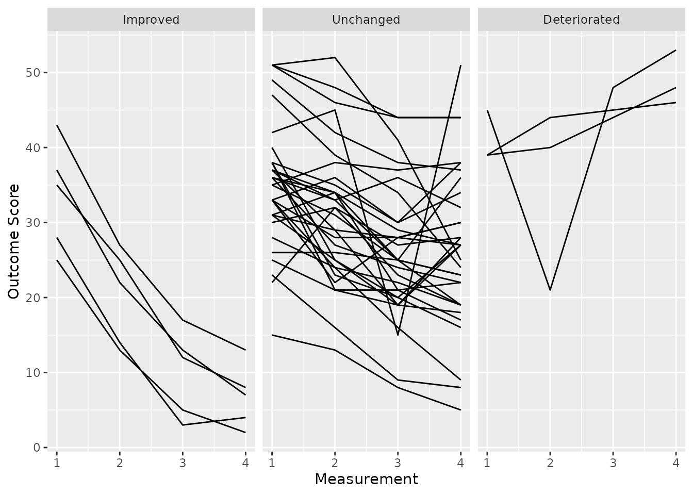

Analyzing Clinical Significance: The Distribution-Based Approach
2025-11-27
Source:vignettes/distribution-based-approach.Rmd
distribution-based-approach.RmdIntroduction
The distribution-based approach addresses a fundamental question in outcome measurement: “Is the observed change in a patient’s score large enough to be considered real, or could it be due to the inherent imprecision of the measurement instrument?”
Every psychometric instrument has some degree of measurement error. This approach determines if a patient’s change is statistically reliable by calculating a Reliable Change Index (RCI). The RCI helps us classify a change as “reliable” if it is unlikely to be a result of measurement error alone.
It is important to note that a reliable change is not necessarily a clinically meaningful one. A patient can show a statistically reliable improvement that is still too small to be practically relevant. For this reason, this approach is often combined with others, like the statistical approach (see the vignette on the Combined Approach).
This vignette demonstrates how to use the
cs_distribution() function to assess reliable change.
Reliable Change for Pre-Post Data
When you have two data points (e.g., pre- and post-treatment), you can calculate the RCI using various methods. This requires an estimate of the instrument’s reliability.
The Jacobson & Truax (JT) Method
The default and most widely used method is that of Jacobson and Truax
(1991). Let’s analyze the claus_2020 dataset, providing the
reliability for the BDI-II, which was estimated at 0.801.
# Analyze reliable change using the JT method
dist_jt <- claus_2020 |>
cs_distribution(
id = id,
time = time,
outcome = bdi,
pre = 1,
post = 4,
reliability = 0.801
)
summary(dist_jt)
#>
#> ---- Clinical Significance Results ----
#>
#> Approach: Distribution-based
#> RCI Method: JT
#> N (original): 43
#> N (used): 40
#> Percent used: 93.02%
#> Outcome: bdi
#> Reliability: 0.801
#>
#> Category | N | Percent
#> ---------------------------
#> Improved | 18 | 45.00%
#> Unchanged | 22 | 55.00%
#> Deteriorated | 0 | 0.00%The results show that 45% of patients demonstrated a reliable improvement, while 55% remained unchanged.
The clinical significance plot is interpreted similarly to the one in the anchor-based approach, but the shaded area now represents the Minimal Detectable Change (MDC), which is derived from the instrument’s reliability. Any change within this area is considered statistically unreliable.
plot(dist_jt)
#> Ignoring unknown labels:
#> • colour : "Group"
Alternative RCI Methods
The clinicalsignificance package offers several
alternative formulas for calculating the RCI. Some methods are more
conservative, while others are more liberal. For instance, the Hageman
and Arrindell (1999b) method (rci_method = "HA") is known
to be more liberal.
Let’s compare it to the JT method:
dist_ha <- claus_2020 |>
cs_distribution(
id = id,
time = time,
outcome = bdi,
pre = 1,
post = 4,
reliability = 0.801,
rci_method = "HA"
)
summary(dist_ha)
#>
#> ---- Clinical Significance Results ----
#>
#> Approach: Distribution-based
#> RCI Method: HA
#> N (original): 43
#> N (used): 40
#> Percent used: 93.02%
#> Outcome: bdi
#> Reliability: 0.801
#>
#> Category | N | Percent
#> ---------------------------
#> Improved | 25 | 62.50%
#> Unchanged | 15 | 37.50%
#> Deteriorated | 0 | 0.00%As expected, the more liberal “HA” method classifies more patients (62.5%) as having reliably improved compared to the default “JT” method (45%). The choice of method should be justified based on the specific context of the study.
Reliable Change for Longitudinal Data (HLM)
A major strength of the cs_distribution() function is
its ability to analyze data with more than two measurement
points. For this, it uses Hierarchical Linear Modeling (HLM) to
estimate an individual change trajectory (slope) for each patient. A
patient’s change is considered reliable if their individual slope is
significantly different from zero.
This is a powerful method as it uses all available data, providing a
more robust estimate of change. To use it, simply set
rci_method = "HLM". Note that you do not need to provide
pre, post, or reliability
arguments, as the model uses all time points and estimates reliability
from the data.
dist_hlm <- claus_2020 |>
cs_distribution(
id = id,
time = time,
outcome = bdi,
rci_method = "HLM"
)
summary(dist_hlm)
#>
#> ---- Clinical Significance Results ----
#>
#> Approach: Distribution-based
#> RCI Method: HLM
#> N (original): 43
#> N (used): 40
#> Percent used: 93.02%
#> Outcome: bdi
#> Reliability: ----
#>
#> Category | N | Percent
#> ---------------------------
#> Improved | 5 | 12.50%
#> Unchanged | 32 | 80.00%
#> Deteriorated | 3 | 7.50%The HLM analysis is much more conservative and finds that only a small fraction of patients showed a reliable improvement or deterioration over the four time points.
Visualizing HLM Results
The plot for an HLM analysis is different. Instead of a pre-post scatter plot, it shows the individual trajectories for patients within each clinical significance category. This is excellent for exploring response heterogeneity over time.
plot(dist_hlm)
#> Ignoring unknown labels:
#> • colour : "Group"
Summary and Next Steps
The distribution-based approach is crucial for establishing the statistical reliability of an observed change.
- For pre-post data, use
cs_distribution()with a knownreliabilityto calculate the RCI. - For longitudinal data ( > 2 time points), use
rci_method = "HLM"to leverage all available data for a more robust analysis.
Remember that “reliable” does not automatically mean “meaningful”. Now that we have covered how to determine if a change is statistically reliable, you can proceed to the vignette on the Combined Approach to see how this concept is integrated with end-state functioning for a more complete picture of clinical significance.